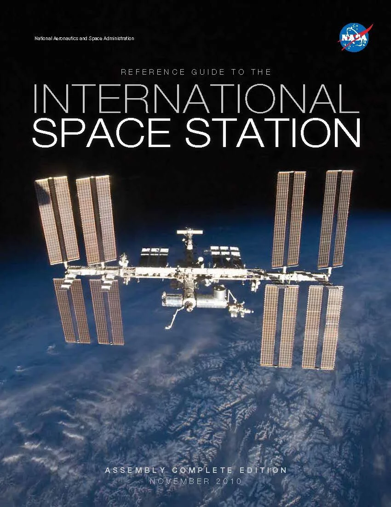

Guide to the ISS
Upon completing assembly of the International Space Station, NASA needed a guidebook for three key audiences: the interested public, Congress, and stakeholders who may be interested in purchasing research time on the ISS. To inform those audiences, the Guide was created (and updated) to explain the work the ISS does, how it was built, and how it shelters the people who work there from the dangers of outer space.

The Goal
Create a guidebook — suitable for both bookshelves and coffee tables — that could serve as a reference guide, advertise research opportunities, and simply be an interesting read. Extremely prominent visuals (four gatefolds, large diagrams) carried significant amounts of data about the station while staying readable for everyone in its audience.
Feedback
While the Guide’s overall design was largely stable throughout development, keeping up with the technical information was a major challenge. Everything happening on the station — from updated weight limits on minor systems to entire support launches being scrubbed — needed to be constantly revised based on new information from partners at NASA.